Latest: five new discovery-loop choices
Trailomon · next gameplay batch · October 31, 2026
Read the trail before you choose.
Trail reports now explain both forks, including what is known, what remains uncertain, and how your current companions or tools can help. Linked roadside choices and optional journal aims are next. Art remains deferred.
All your answers are saved: N1–N11 are YES in submission 42. No repeat vote is needed. N6 art stays deferred by your later chat instruction. Previously answered ideas are hidden. Approved work remains in the build queue.
Verdict: building core systems
- Working: the full route, six species, automatic battles and peaceful alternatives, gathering, recruitment, save/backup recovery, initial progression and a Windows build.
- Recent progress: lower combat effort, a readable guardian sequence, reversible battle preparation, consistent labeled icons, six landmark scenes and automatic screenshots.
- Missing depth: equipment now supplies three optional tools; only two battle scenarios exist. Broader crew balance and stronger reasons to choose a different journey remain open.
- Basics to finish: sound, reduced-motion and speed settings exist. Listening, full physical keyboard use, human pacing and a known Windows activation crash remain unresolved. Saves have passed native persistence checks.
- Verified this batch: 70 Lua scenarios, 3 capture-isolation checks, native saves and 36 GUI states plus route/Enter interactions. Four affected game screens inspected; 48 matched branch continuations remain identical after reading reports. Earlier equipment/full-journey evidence remains valid. Physical keyboard, sound and human pacing remain open.
Next: N10 event chains, then N11 journal aims. N1’s checkpoint, N7’s work items and N9’s fork reports are complete; broader S5 balance continues. N8 remains a milestone check.
At the two forks
Known terrain: distances, terrain speed, gathering yield, and the ridge's extra wagon wear and hurried cargo loss. The game and report now share the same branch distances. Reading takes no time; you can prepare the crew before leaving.
Uncertain conditions: Split Oak's outlook uses today's weather, without predicting a hidden roll. At Cairn Gate, no fresh report reaches beyond the shelter. The report becomes less complete as dependable travel falls away.
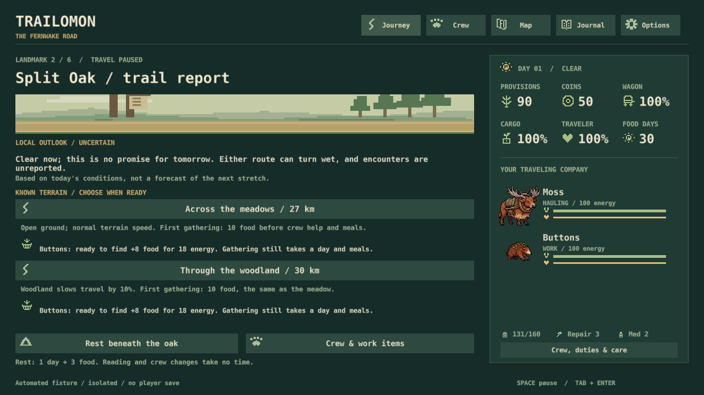
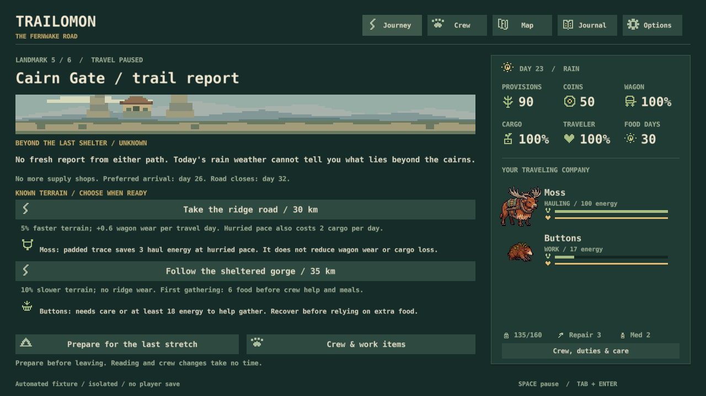
Already fixed: the first compact scene let wagon sprites overlap the heading. Its existing landscape now fits cleanly above the report. No new art or animation pass.
Verification: six new simulation scenarios cover pure repeated reads, older snapshots, no knowledge of future random rolls, current crew readiness, item transfers and actual terrain effects. All four routes were activated through the production keyboard handler. Crew preparation, resting and camp controls passed. Four actual 1280×720 views were inspected.
Limits: these are focused automated play checks, not a new human-role journey. Route balance, physical keyboard, listening, human pacing and the known Windows activation fault remain open. The report reveals woodland's current limited advantage; changing that balance needs a separate design pass.
Exact capture input hashes. N9/S18 is implemented. Next approved feature: N10's two event consequence chains.
Previous batch: three practical work items
A practical tool for each companion
Open Crew → Work items, or use the depot/shop link. Buy, choose a wearer and equip. One slot per companion; one copy of each object per trip. Swaps take no time while stopped outside an encounter. Packed objects use carrying room even when unequipped. Return them for full price before departure; supplies are packed afresh for each expedition.
| Item / cost | Travel use | Encounter use |
|---|---|---|
| Padded trace 12 coins / 4 load | Hurried hauling costs 3 less energy | Approach: first damaging hit loses up to 6 harm |
| Release rope 10 coins / 3 load | Halves food/cargo loss in a bad crossing | Participating wearer caps scavenger retreat loss at 4 food / 4 cargo |
| Dry wrap 8 coins / 2 load | Rain and meals give the wearer 3 extra energy recovery | Bellmoth keeps its full 16-cover shimmer in rain |
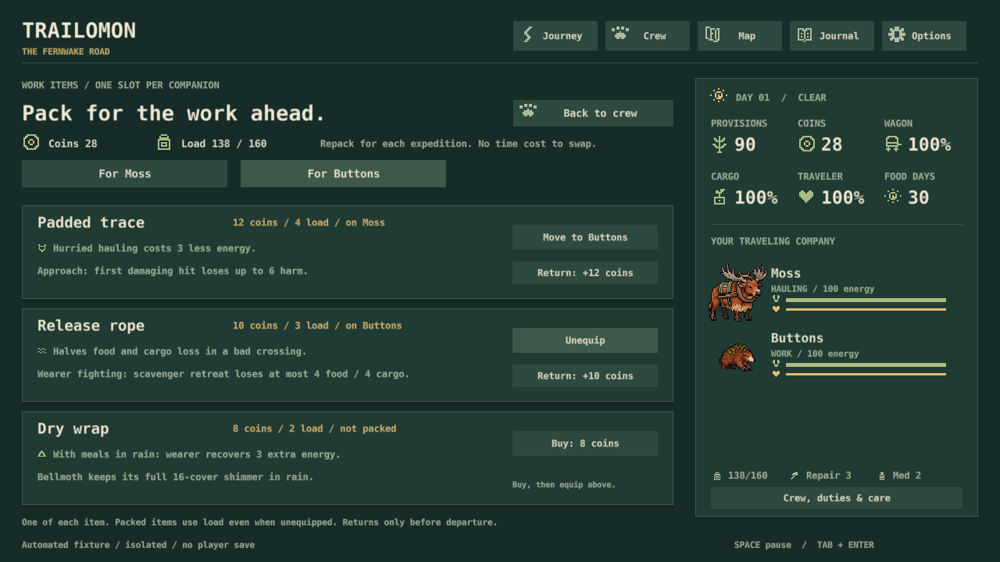
Combat checkpoint: 5,760 no-item cases remain byte-identical to the baseline. Different crews have useful contexts: Cindercoil/Slatewhorl excels against the guardian; Reedskipper/Bellmoth takes less scavenger harm. Peaceful choices still avoid fatigue or injury. No base combat buff was added.
Initial item balance: 144 seeded full journeys completed and replayed exactly. Dry wrap reduced recovery stops in these fixed policies. Trace and rope benefits are covered by targeted hard-hauling, damage, crossing and retreat scenarios. Buying none remains viable. This is evidence for the experiment, not proof of optimal balance.
Save checks, combat feedback and remaining limits
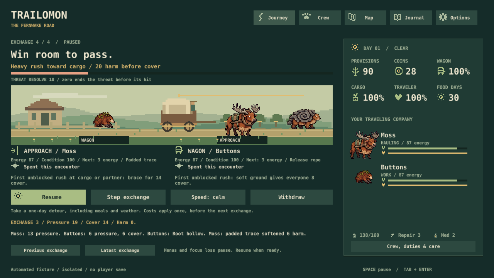
Tests cover item ownership, capacity, transferring a slot without copying, returns, locked encounter swaps, legacy saves, native serialization and no permanent item/stat retention. The existing input handler activates the new buttons with Enter. The actual depot, shop, crew, item page, locked page and combat views were inspected at 1280×720. A depot text/button overlap was fixed. No Computer Use or paid art was needed.
The Windows activation fault, listening, full physical keyboard use and human pacing remain open. This batch used focused scripted play, not a new complete human-role playtest. Numbers and input hashes.
Approved work and next steps
N1Completed: pre-equipment combat checkpoint
Compared both encounters across all ordered crews, two environments, two energy levels and twenty seeds. Documented useful pairings and peaceful tradeoffs; froze the baseline and proceeded to N7.
Evidence: 5,760 no-item cases are unchanged after equipment. The specialist guardian crew is not the safest scavenger crew. Existing full-run baseline and exact legacy regressions remain green.
Cost and recommendation: Checkpoint complete without a base combat buff. Keep S5 open for broader balance, but do not restart this gate before the next gameplay feature. Original approval retained.
N7Implemented: three practical work items
Padded trace, release rope and dry wrap now have travel/combat uses, coin/load costs, stopped-only swaps, depot returns, visible assignments and compatible saves.
Evidence: 64 Lua checks, native persistence and focused UI checks pass. Seven rendered views inspected; 144 bot journeys repeat. The report above shows the actual item screen and combat result.
Cost and recommendation: The bounded S9 experiment is complete. Tune from play rather than expanding into tiers or crafting. N9 is also complete; N10 is next.
N9Implemented: reports before route choices
Both forks separate fixed terrain facts from uncertain outlooks and give advice based on current crew and work items. Later reports explicitly lack fresh news.
Evidence: the actual game captures above, 70 Lua scenarios, native route controls, and 48 unchanged branch continuations. No report reads or advances hidden random streams.
Cost and recommendation: The bounded S18 feature is complete. Keep the original approval attached to N9; proceed with N10.
N104. Make two roadside choices come back later
Add two short chains within the existing event pool. For example, clearing a blocked trail can change a later encounter; protecting a food cache can change a later resupply opportunity. Each gets one later consequence, with a clear reminder of the earlier choice.
Evidence: The game already has recruitment follow-ups and a grateful-traveler consequence. Most other obstacles resolve locally. Extending that existing pattern is a small route to more emergent expedition stories.
Cost: One or two content/rules PRs with persistent flags, deterministic scheduling and save checks. A small content extension, not a branching campaign. Recommendation: Good follow-up after N7/N9. Approved in submission 42; retain the two-chain scope.
N115. Give each return trip a small optional purpose
Offer three optional journal aims using existing content: deliver with a new crew pairing, document both final branches across journeys, or finish a trip without fighting. Show progress and a completion entry; keep rewards to knowledge and recorded accomplishments.
Evidence: Companions, discoveries, memories, ten journey summaries and a covered-wagon unlock already persist. Clear optional aims could make those existing systems a stronger reason to depart again.
Cost: One or two PRs for goal evaluation, saved progress and a compact journal/departure explanation. No permanent attack bonuses, daily chores or additional regions. Recommendation: Later, once the equipment/route decisions are fun. Approved in submission 42; retain only these three aims.
N86. Check reliability and feel at the next milestone
After the gameplay batch, run the remaining physical keyboard, listening and human-pacing checks. Give the Windows activation fault a bounded reproduction session and fix a reproducible cause before a release candidate.
Evidence: Scripted input, settings persistence, save recovery and captures pass. They do not prove real focus/keyboard behavior, audio quality or the 20–35 minute target. The activation crash remains open.
Cost: One focused milestone session; deep crash work only if reproduced or required for release. Do not repeat full journeys and packaging on every small change. Recommendation: Keep scheduled for the milestone; existing N8/S10 approval remains valid. Fix an encountered blocker immediately.
Completed route work and evidence
The road now changes as you travel
Each existing landmark has its own composition. Early scenes show maintained rails, nursery rows and wheel tracks. Beyond the outpost, roofs become scarce; beyond Cairn Gate, broken ruts and a wide horizon replace dependable shelter. The ridge stays open, the gorge closes around the wagon, and Lantern Reach is only a few warm windows beneath the hills.
Clarity first: landmark scenes sit beside the actual choices. The map and Mossbell both label the last shop; Cairn Gate marks the last maintained shelter. Existing provisions and rest symbols carry those meanings. The ferry remains dependable, both routes remain viable, and the underlying expedition rules are unchanged.
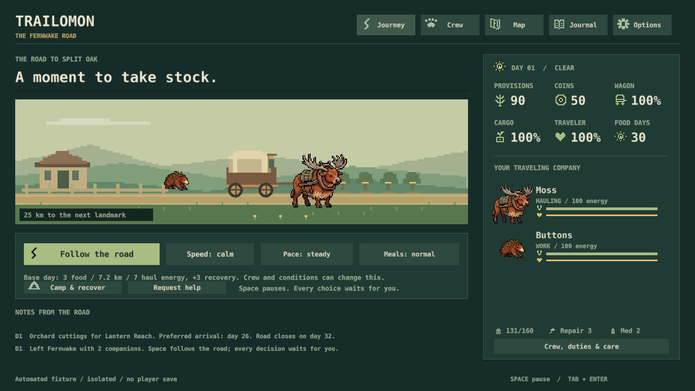
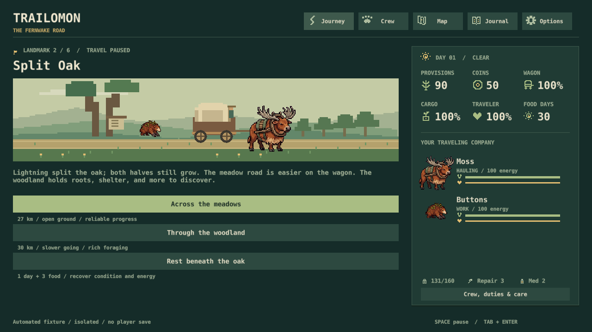
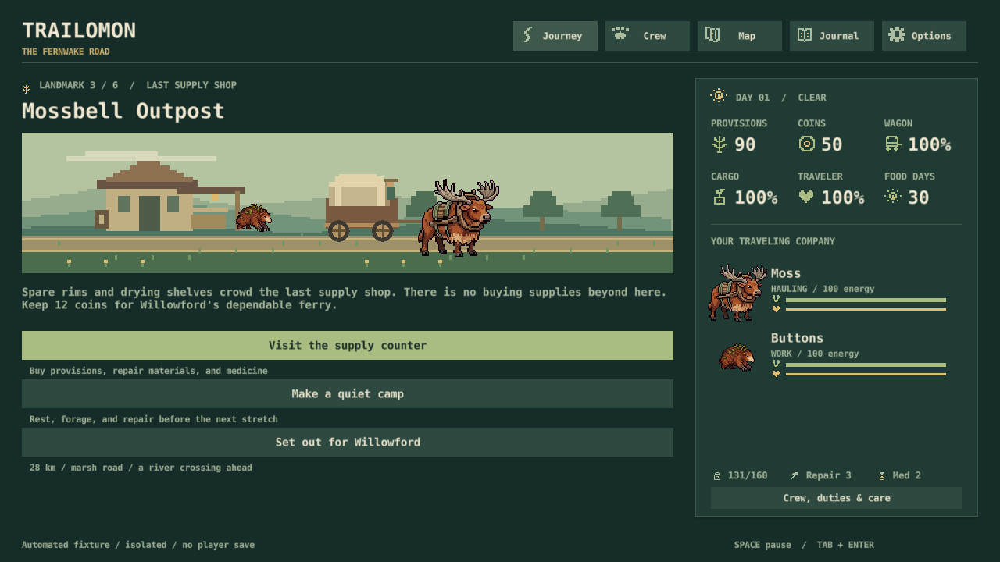
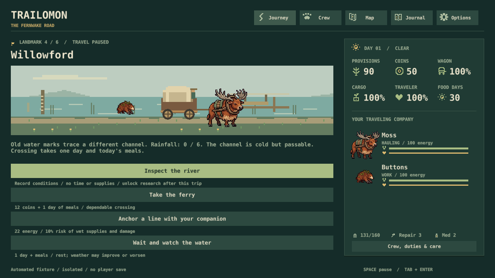
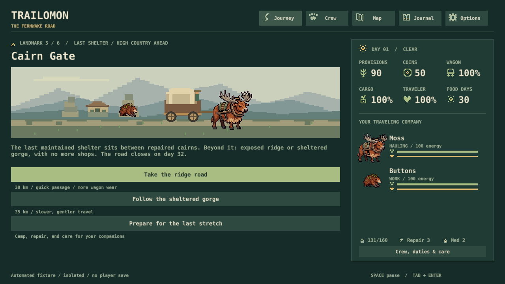
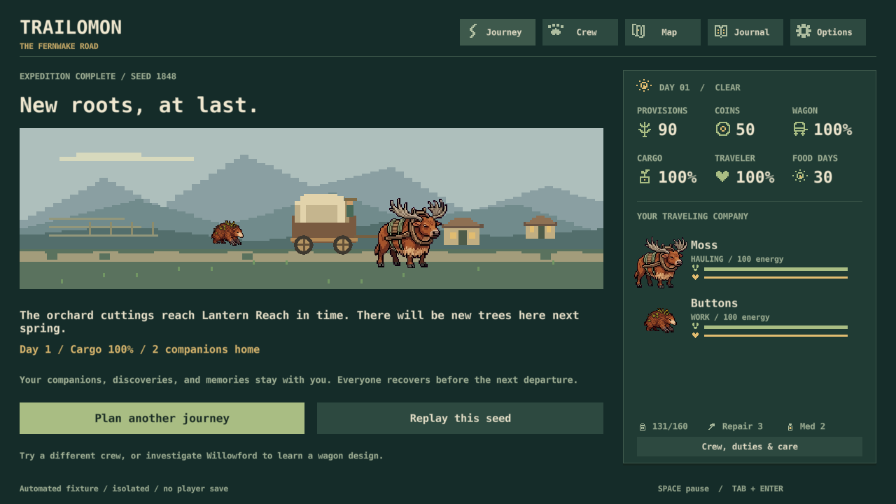
Chosen routes and the map
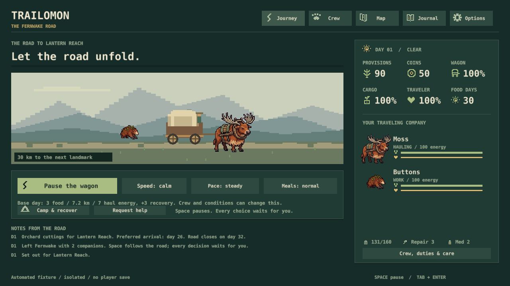
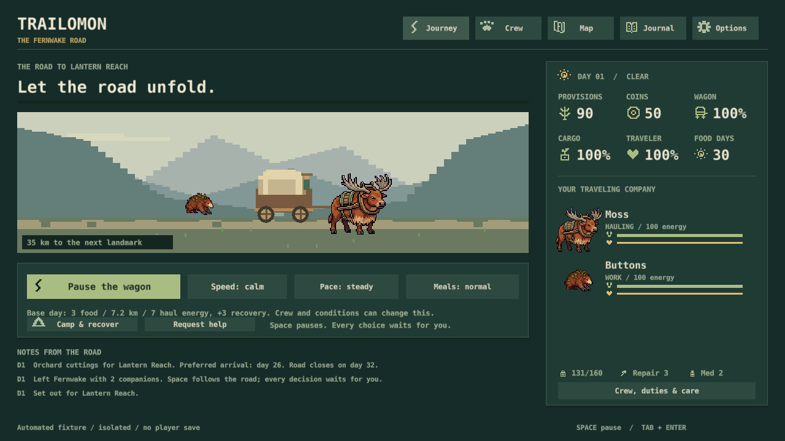
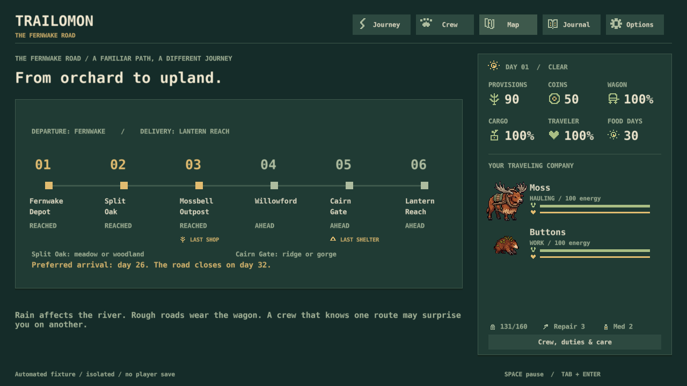
Checked: all six locations, both final branches, the map, rainy Willowford and a combat view at 1280×720. Production buttons selected each final branch. The rendering does not mutate the journey or its random streams. Native save, GUI and keyboard-routing checks pass. This is focused scripted verification, not a new full human-role journey.
Already fixed: the first scenery version exceeded the GUI drawing budget during rapid screen changes. Adjacent hill spans now share drawing nodes without changing the pixels. The existing test passes with its original node limit. The road distance label also received a contrasting backing.
Art status: these are deliberately authored pixel compositions, using native geometry and the existing creature studies. They establish place and remoteness; the creature anatomy/pose pass is deferred to the owner-led art overhaul. No paid generation or extra region. The known native activation fault remains open.
Capture source hashes. N5/S7 is implemented; the next development priority is gameplay. Creature-art and animation passes are deferred to your later overhaul. Your original votes below remain valid.
Previous batch: combat costs and guardian adoption
Combat effort: implemented and tested
New expeditions spend 3 energy per ordinary exchange, 6 per ability once, and 1 during the guardian's harmless warning. The guardian now normally uses its readable cargo shove, warning, heavy approach, heavy cargo sequence. Scavenger effort is capped at 15 per companion; guardian effort at 16. Existing journeys keep their earlier costs and behavior until the next expedition.
Why adopt it: the original prototype's warning could exhaust tired crews before they reached the promised response. With the new costs, the 16-energy crew trials match the rested win count while still spending energy that matters on the road.
| Rules / energy | Wins | Mean cargo harm | Mean crew harm |
|---|---|---|---|
| Original random / 16 | 0 | 10.12 | 6.95 |
| Old prototype / 16 | 40 | 12.68 | 11.63 |
| New authored / 16 | 420 | 9.33 | 5.93 |
| New authored / 100 | 420 | 9.33 | 5.93 |
All 7,200 cases repeated exactly: thirty ordered crews, twenty seeds, two environments, two energy levels, three rule sets. Across 38 matched guardian journey starts, old rules delivered on time 11 times and new rules 13. Mean recovery fell from 1.39 to 1.08 days. The new version applies to subsequent fights too; this compares the remaining expedition, not only one guardian.
Across 120 complete reference journeys, careful and peaceful outcomes stay at 23/40 and 14/40 on-time deliveries. Fighting-first improves from 5/40 to 6/40, with mean recovery falling from 1.63 to 1.40 days. These fixed policies are not optimal play, and the improvement is modest. Peaceful choices remain useful; broader balance remains open.
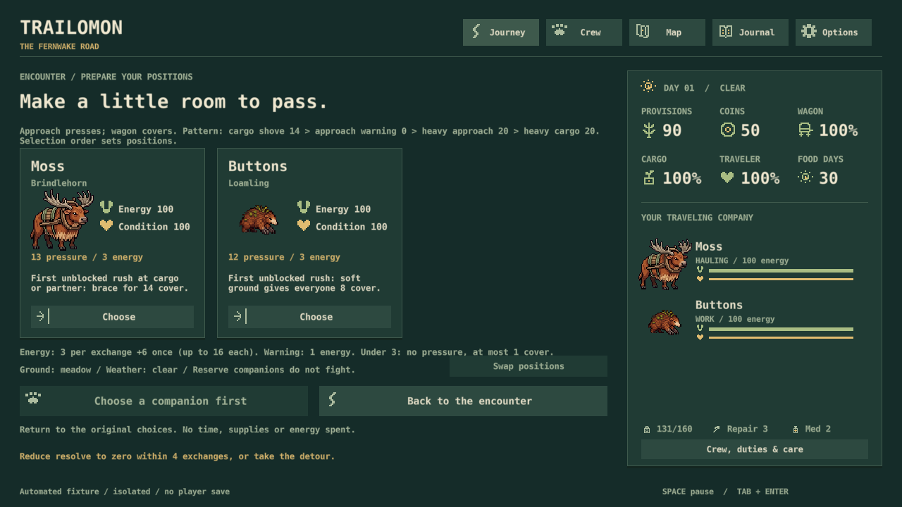
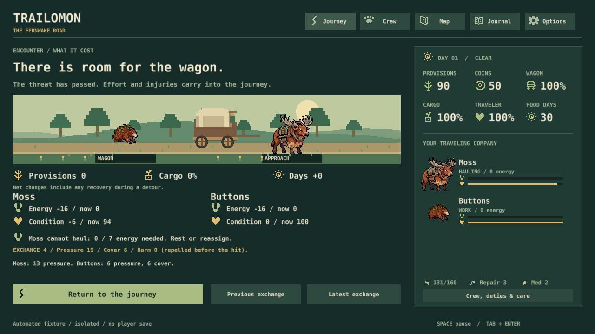
Scope and limits: save compatibility and exact original-rule regressions pass. No new region, enemy, loot system or battle clock. Six production-rendered screens passed visual inspection at 1280 by 720 using real UI callbacks. This is not a new human-role journey, physical keyboard test or listening review; the native activation crash remains unresolved.
Comparison numbers and source hashes. Reproduce with ./tools/guardian_report.ps1. The bounded cost pass is complete and N5 scenery has shipped. Next is the short N1 checkpoint followed by N7 equipment.
Earlier decisions — original votes retained
N5Implemented: a road that grows wilder
Six distinct landmark scenes, branch-specific travel surroundings, concise local lore and matching last-shop/shelter cues are now built.
Evidence: the route sequence above shows the actual game, including the four-option river decision and both final branches. The original expedition rules remain unchanged.
Cost and recommendation: N5/S7 is complete. Keep this scenery functional while gameplay development continues; further art refinement is deferred. Original approval and comments remain attached to N5.
N6Deferred: owner-led art overhaul later
Dedicated creature redesign, pose refinement, scenery polish and animation passes are no longer the next development task. Keep the current assets usable for playtesting.
Reason: your October 31 chat instruction says you will do a large art overhaul later. It supersedes the earlier art-priority recommendation.
Cost and recommendation: defer cosmetic work. Fix readability, unclear icons or missing gameplay feedback when necessary. The original vote is retained; no new vote is required.
N3Completed: guardian experiment and comparison
PR #18 delivers the approved four-exchange prototype in F3 developer controls. It shows the complete pattern before commitment and preserves saves and free return. The N1 cost pass now adopts it for new journeys.
Evidence: 4,800 encounters and 38 matched continuations repeated exactly. Actual setup, warning and heavy-rush screens were captured and inspected. Read the comparison.
Cost and recommendation: Experiment complete. Existing N3 approval and notes remain attached to this original code.
N2Shipped: explain the next trigger and next job
C1 and C3 are implemented: each combatant explains whether its next ability will trigger, why it cannot, and the energy cost. Results relate remaining crew energy to existing travel duties.
Evidence: Forecasts use the real resolver on copied state, agree across ordered pairs and four energy levels, and do not consume live RNG. Focused Windows playtests verified partner cover, follow-up and spent abilities.
Cost and recommendation: Delivered in PR #7 / S14. Keep this explanation contract when N3 or N7 changes the rules.
N4Shipped: make a gathering day easy to judge
S6 now previews place, depletion, effort, meals, carrying room, food found, food packed and net gain, then logs the actual receipt. Hunting remains deferred.
Evidence: A fresh-profile playtest matched 18 found, 12 packed, 3 meals and +9 net; the wagon reached 160/160. The road-closure preview bug was fixed.
Cost and recommendation: Delivered in PR #7. Keep the preview and actual result in agreement when later systems change capacity or effort.
Original guardian experiment — historical evidence
Guardian experiment: built and compared
Historical October 30 experiment: this comparison used original 4/8 energy costs. The October 31 pass above resolves the tired-crew cost issue and adopts the sequence for new journeys. F3 now labels it Guardian pattern / test encounter.
The four exchanges are cargo shove (14 harm), approach warning (0), heavy approach rush (20), and heavy cargo rush (20). The whole sequence appears before commitment. Ordinary actions still cost 4 energy during the warning; defensive abilities wait for a real hit. Saves and free return preserve the pattern.
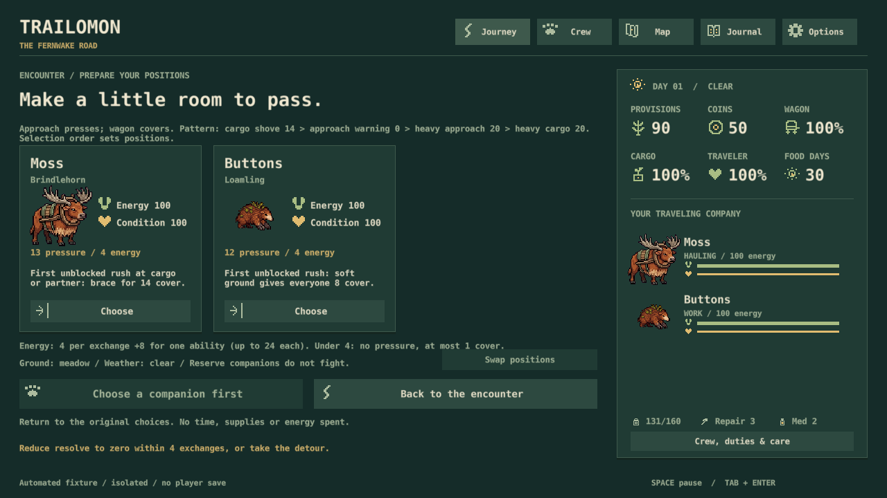
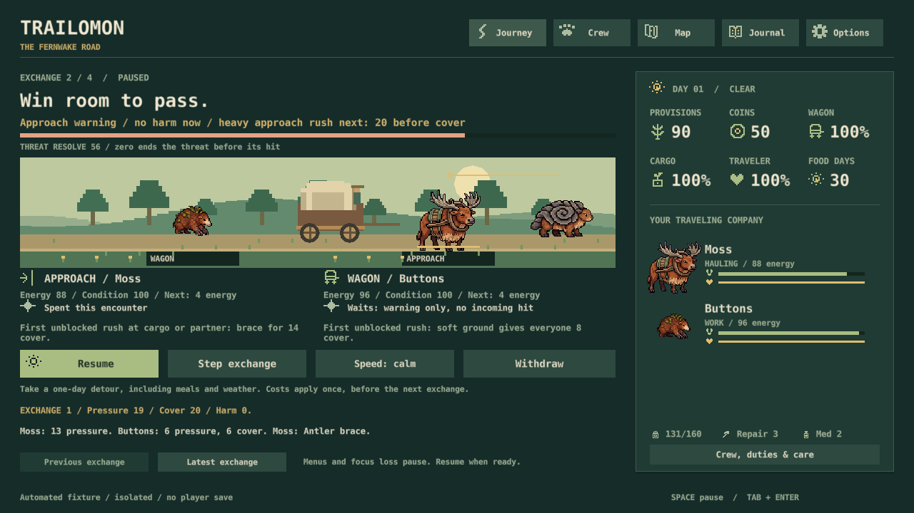
Fixed comparison
4,800 encounters, repeated exactly: 30 ordered two-species crews × 20 seeds × meadow/clear or ridge/rain × 100 or 16 energy × both variants. Each row below contains 1,200 encounters. Companion harm counts actual incoming hits; cargo harm is the encounter's loss.
- Rested, current: 420 wins; mean cargo harm 13.89; companion harm 10.58.
- Rested, authored: 420 wins; mean cargo harm 9.33; companion harm 5.93.
- Tired, current: 0 wins; mean cargo harm 10.12; companion harm 6.95.
- Tired, authored: 40 wins; mean cargo harm 12.68; companion harm 11.63.
38 matched guardian continuations from the 120 reference journeys all finished and repeated exactly. Both variants delivered 11 and arrived late 27, with mean ending day 27.66 and recovery days 1.39. Each pair starts from the same journey state and keeps the same subsequent policy; only that guardian differs. These policies do not establish optimal play or human pacing.
Verified: 49 Lua tests, 3 capture-isolation checks, native save/load through the new stages and 36 GUI states. Inspected the actual setup, warning, heavy rush and developer menu at 1280×720. This was scripted verification, not a fresh human-role playtest; physical input and sound remain open.
Original recommendation (superseded above): keep the opt-in prototype while S5 examines the tired-crew tradeoff. No extra enemy, region, equipment or attack-clock rewrite is included. Reproduce with ./tools/guardian_report.ps1. Existing votes below retain their meanings.
Earlier full-expedition baseline — historical evidence
N1: a report for the whole expedition
Implemented: one command exports every decision and its reason, before/after resources, recovery days, resource lows, input-mode gates, and outcomes. Matched continuations fight, resolve peacefully, or withdraw from the same encounter snapshot and then use the same later policy. Each batch runs twice; an individual trace can be replayed against its source/runtime fingerprint.
./tools/expedition_report.ps1 -CompareCommitted baseline: seeds 1–40 under three reference policies; 120 full journeys and 339 continuations from 113 sampled encounter starts. Every case completed and matched its repeat exactly. Source 81e7004, clean working tree. These are bot playtests of the real model; they do not establish human playtime or usability.
| Policy | On time | Median arrival |
|---|---|---|
| Careful | 23 / 40 | Day 26 |
| Peaceful | 14 / 40 | Day 27 |
| Fighter | 5 / 40 | Day 28 |
What the matched starts add: fighting scavengers lost an on-time delivery in 24 of 75 comparisons with the first available peaceful choice, gained none, and added a median one recovery day. Guardian fights gained one on-time delivery and lost two across 38 comparisons; median arrival difference was zero, with a median one extra recovery day. These are the current reference crews and decisions, including repeated starts across policies—not independent trials or proof about optimal play.
A trace you can inspect: seed 1, careful policy, early scavengers. Fighting kept the immediate food but spent 40 total crew energy; the continuation needed a recovery day and arrived on day 27. Leaving six provisions arrived on day 26 without that recovery day. Later weather and events can also change when the intervention changes time.
Verification: 40 Lua tests, 17 Python checks, native persistence and 34 GUI states passed. Reporting reproduces all 120 original benchmark end states, detects deliberate stalls and policy faults, retains journal additions past the display limit, rejects altered traces/source, and preserves existing output folders. The committed sample passed replay through the PowerShell launcher. No game balance or player saves changed.
Limits: lows are sampled at command boundaries; resource changes are net, not gross internal spending. Gates show where input is needed, not how long a person waits. The policies are frozen benchmarks, not optimal players. Physical keyboard, listening, full-trip pacing, and the hidden-window launch issue remain separate checks.
Readable report · All run summaries · Matched results · Paired summary · Replayable sample · Provenance
Next use of this evidence: N8’s complete player journey, with special attention to recovery after an otherwise successful battle, followed by S5 tuning. The tool is delivered; balance conclusions still need that judgment. Your existing approvals remain in force.
Whole-journey playtest and shipped J1–J4 fixes · F1 capture tooling delivered. F2/F3 remain unapproved optional tools; neither blocks gameplay work.
Clarity playtest evidence and screenshots
Clarity pass: implemented and tested
Your answers were received: N1–N8 all YES. Your comment makes visible clarity and simplicity critical path. This update records the first implementation batch; no second vote is needed. The options below retain their original codes and your saved answers.
What changed: a shared catalog now defines 27 labeled resource, role, and action symbols, with an in-game Journal → Symbol guide. Hauling, gathering, and the approach position have their own marks. Icons draw at whole-pixel sizes. Combat explains the upcoming trigger or its blocking reason, and the result relates remaining energy to an existing travel duty. Gathering separates food found, room after meals, food packed, and net gain.

New-player role: using the on-screen camp controls, I reviewed and gathered with a nearly full wagon. The preview showed 18 found, 12 packed, 3 meals, +9 net and 18 digging energy. The actual result advanced one day, raised provisions from 110 to 119, filled the wagon to 160/160, and recorded the receipt. Buttons ended at 89 energy after the day's normal recovery.

Expert role: Flint's wagon cover triggered Ember's follow-up exactly as forecast. Both then said “Spent this encounter.” Withdrawal still charged one day and four provisions once; the result explained net recovery and whether Moss could haul. I inspected every symbol-guide group at 1280 by 720. A separate hand-gathering check matched 6 found / 6 packed / 4 meals / +2 net.

Already fixed: the gathering preview could promise a harvest on the day the road closes, even though rescue happens before food is packed. The preview now returns zero packed food and the screen explains why gathering cannot finish. Remaining player-facing “stamina” labels now say Energy.
Verification: 34 Lua tests, 12 Python checks, native save/recovery and 34 GUI states pass. Forecast tests cover all ordered pairs at four starting-energy levels, with live-state/RNG immutability checks. Existing journey counts remain 37/80 baseline deliveries and 5/40 fighting-first deliveries. Mouse-driven focused playtests passed; physical keyboard usability, full-trip pacing, listening review, final art, and expedition balance remain open.
N2 and N4 are implemented in this batch. N1 measurement/tuning, N3's guardian experiment, N5 wilderness, N6 art, N7 equipment, and N8's full-journey pass remain approved work. This evidence is from the preceding clarity batch, not a new desktop playtest during this audit.